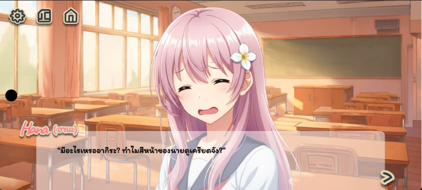

Projects
Energy Consumption Prediction
Built end-to-end ML models predicting Thailand's energy usage across electricity, diesel, and natural gas using MLR and Lasso Regression. Applied Diebold-Mariano Test for statistical model comparison, achieving R² up to 0.79.
Sentiment & Persona Chatbot
Analyzed sentiment distribution and persona understanding from Facebook AI PersonaChat dataset. Used VADER for sentiment analysis, TF-IDF for keyword extraction, and Logistic Regression for persona prediction.
 NLP / AI
NLP / AI
Fake News Detection
Built a classification system to detect fake news using TF-IDF vectorization with Logistic Regression and Random Forest. Compared model performance across accuracy, precision, recall, and F1-score metrics.

VISUAL NOVELBeyond Hana
A visual novel with original story, dialogues, and character backstories designed to create immersive player experiences. Features hand-crafted character personalities and AI-assisted visual presentation.